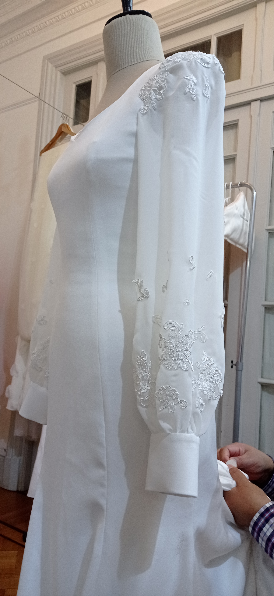

Del Juego a la Pasión
Desde mis primeros diseños para muñecas, transformando retazos de tela en vestuarios imaginativos, hasta la creación de piezas exclusivas y a medida para mis clientas de hoy, una constante innegable ha marcado mi camino: la inquebrantable pasión por hacer.


De la Aguja al Arte
Esta fascinación por el arte de la moda no solo guio mis manos infantiles en la modistería, sino que, de forma natural, evolucionó hacia el diseño, marcando cada paso de mi trayectoria. Mi formación técnica en Industria del Vestido comenzó en mi ciudad natal, Villa El Salvador, Lima, Perú, donde adquirí las bases esenciales de la confección y el diseño. Sin embargo, mi espíritu inquieto me impulsó a buscar nuevos horizontes. Me trasladé a Buenos Aires, Argentina, una metrópoli que me acogió y donde pude perfeccionar mis técnicas, absorber la cultura local de la moda y ganar valiosa experiencia trabajando para diversas marcas. En 2006, decidí emprender mi propia marca, combinando mi creatividad y conocimientos. Durante un tiempo colaboré con otras firmas mientras desarrollaba mis propios diseños, consolidando mi estilo y propuesta. Finalmente, en 2010, di el salto hacia la independencia total, haciendo realidad el sueño de tener mi propio espacio creativo.

El Florecer de mi Marca
Así nació mi estudio, un espacio creado para el desarrollo integral de producto. Ofrezco un servicio completo que abarca cada etapa del proceso creativo: desde el diseño conceptual y la creación de prototipos, hasta la elaboración de moldería y la supervisión de la producción final. Me enorgullece colaborar con marcas y diseñadores independientes, aportando mi experiencia para materializar sus visiones. Al observar las dinámicas del mercado, identifiqué una creciente demanda de confección a medida, donde la personalización y la exclusividad son esenciales. Por ello, incorporé este rubro, especializándome en el área de Novias. En este campo, cada pieza se convierte en un sueño confeccionado con dedicación y detalle para un momento único en la vida de una mujer. Tras un largo proceso de planificación, lleno de ideas y mejoras continuas, estoy inmensamente emocionada de anunciar que en 2025 lancé mi primera colección formal: "Jardín Secreto". Esta colección representa la culminación de años de trabajo, aprendizaje y pasión, un reflejo íntimo de mi visión estética. ¡Los invito a descubrir la esencia de este proyecto tan personal y a sumergirse en mi "Jardín Secreto"!
Nuestros Valores

SOSTENIBILIDAD
Estamos comprometidos con la moda responsable. Desde el abastecimiento consciente hasta la producción ecológica, priorizamos prácticas sostenibles que respeten a las personas y al planeta.
INNOVACIÓN
La creatividad nos impulsa hacia adelante. Adoptamos nuevas ideas, tecnologías y tendencias para evolucionar constantemente y ofrecer diseños innovadores.
CALIDAD
La excelencia no es negociable. Cada prenda está creada con precisión, utilizando materiales de primera calidad para garantizar durabilidad, comodidad y estilo duradero.
ENFOQUE EN EL CLIENTE
Nuestros clientes están en el centro de todo lo que hacemos. Escuchamos, nos adaptamos y nos esforzamos por ofrecer experiencias excepcionales en cada punto de contacto.
SOSTENIBILIDAD
Estamos comprometidos con la moda responsable. Desde el abastecimiento consciente hasta la producción ecológica, priorizamos prácticas sostenibles que respeten a las personas y al planeta.
INNOVACIÓN
La creatividad nos impulsa hacia adelante. Adoptamos nuevas ideas, tecnologías y tendencias para evolucionar constantemente y ofrecer diseños innovadores.
CALIDAD
La excelencia no es negociable. Cada prenda está creada con precisión, utilizando materiales de primera calidad para garantizar durabilidad, comodidad y estilo duradero.
ENFOQUE EN EL CLIENTE
Nuestros clientes están en el centro de todo lo que hacemos. Escuchamos, nos adaptamos y nos esforzamos por ofrecer experiencias excepcionales en cada punto de contacto.
Sigúenos en {{"@"}}aldana_vilcabana